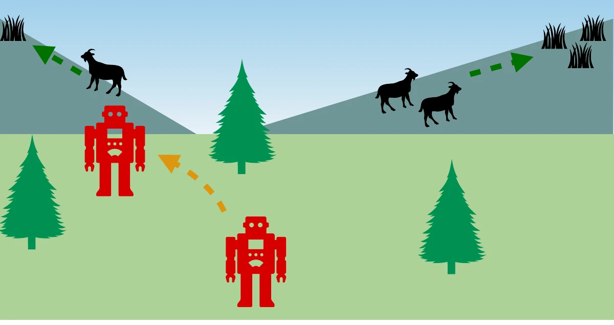
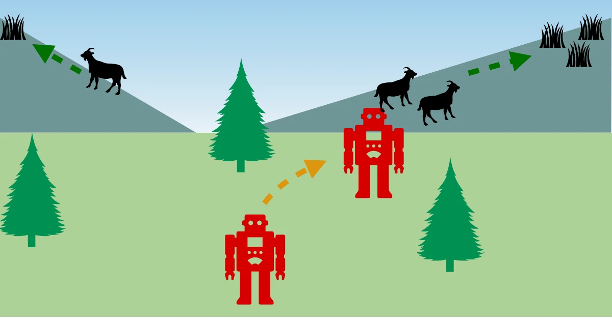
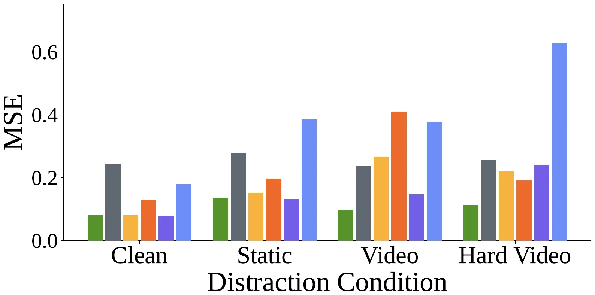
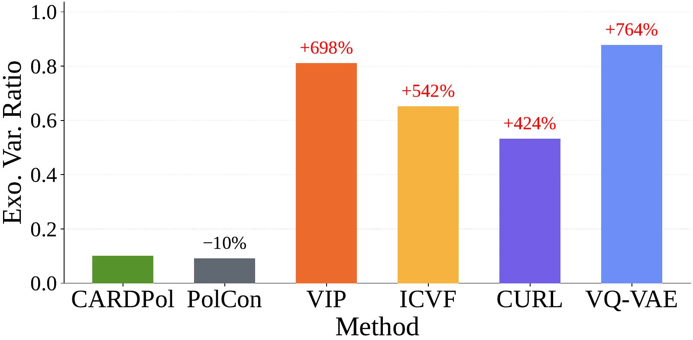
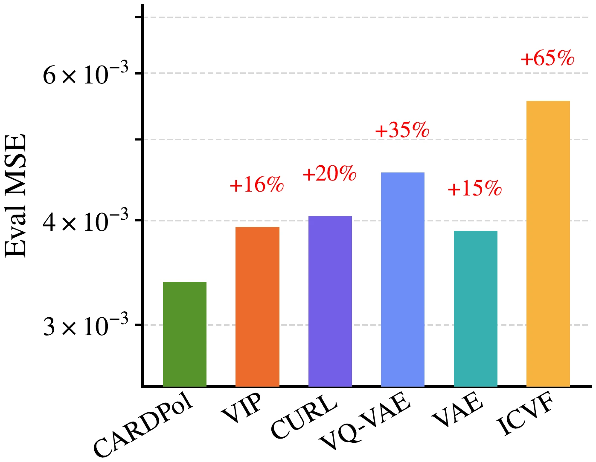

Action-free video · Representation learning · Visual control
Control-centric Representation Learning using Action-free Datasets with Distinct Policies
Learn what matters for control by asking
which policy produced this behavior?
Overview
Learning from video, without action labels
Videos contain useful information about behavior, but also visual changes that an agent cannot control. Without actions or rewards, a representation learner can confuse a moving background with meaningful dynamics.
CARDPol—Controllable Action-free Representations using Distinct Policies—uses an additional source of supervision: trajectories grouped by the policies that collected them. A shared encoder and classifier learn to predict policy identity from pairs of observations. Differences in behavior help reveal control-relevant features, even when the scene contains time-correlated distractions.
We evaluate frozen representations for offline reinforcement learning in DeepMind Control, joint representation learning and behavior cloning in LIBERO, and human wrist-position decoding on EgoDex. The results show improved control under video distractions and reduced sensitivity to irrelevant visual variation.
The intuition
Same world. Different policies.
One robot moves left; another moves right. To tell their policies apart, look at the robot’s behavior. The trees, sky, and animals need not explain the difference.


The method
A simple prediction task for useful representations
Sample two observations from one trajectory, encode both with the same network, and predict the policy that generated them.
Sample an observation pair
Same trajectory
Random temporal offset k
Share a visual encoder
Both observations become
compact visual representations
Predict policy identity
Cross-entropy updates
the encoder and classifier
During representation learning
Use observations and policy labels. No actions or rewards enter the CARDPol objective. Task identity serves as a practical policy-class proxy in LIBERO and EgoDex.
For downstream control
Discard the classifier. DMC freezes the encoder for action- and reward-labeled DrQ+BC training; LIBERO jointly trains the encoder with target-task behavior cloning.
What does the theory guarantee?
Under the paper’s finite-space, coverage, stationarity, noise-independence, and policy-diversity assumptions, the ground-truth endogenous encoder minimizes the objective, and any minimizing encoder retains enough information to recover the endogenous state. This is an information-sufficiency guarantee: it does not require the representation to exclude exogenous information. Continuous-control performance and distractor sensitivity are evaluated empirically.
Downstream control
Useful representations in distracting environments
Reported results from the paper. Representation learning is action-free; downstream control uses labeled data.
than the strongest evaluated baseline per setting
success under video distractions
mean return
DeepMind Control Suite
Frozen encoders → offline DrQ+BC · Mean return ± standard error, 4 seeds
All DMC results
| Domain | Setting | CARDPol | PolCon | VIP | ICVF | VAE | VQVAE | CURL |
|---|---|---|---|---|---|---|---|---|
| Cheetah | Clean | 523 ± 5 | 402 ± 40 | 411 ± 28 | 412 ± 13 | 364 ± 27 | 131 ± 10 | 337 ± 17 |
| Cheetah | Static | 614 ± 4 | 425 ± 15 | 462 ± 5 | 510 ± 12 | 201 ± 11 | 271 ± 19 | 602 ± 11 |
| Cheetah | Video | 449 ± 16 | 336 ± 26 | 257 ± 15 | 301 ± 9 | 174 ± 9 | 133 ± 4 | 357 ± 8 |
| Cheetah | Hard video | 293 ± 11 | 196 ± 13 | 117 ± 7 | 218 ± 16 | 88 ± 0 | 82 ± 2 | 150 ± 6 |
| Walker | Clean | 885 ± 17 | 726 ± 21 | 313 ± 18 | 883 ± 6 | 140 ± 11 | 148 ± 6 | 647 ± 34 |
| Walker | Static | 649 ± 33 | 384 ± 44 | 139 ± 3 | 254 ± 17 | 72 ± 3 | 76 ± 2 | 132 ± 7 |
| Walker | Video | 578 ± 8 | 378 ± 9 | 134 ± 7 | 129 ± 3 | 101 ± 4 | 95 ± 2 | 102 ± 3 |
| Walker | Hard video | 443 ± 5 | 354 ± 18 | 86 ± 5 | 123 ± 8 | 81 ± 6 | 72 ± 1 | 74 ± 2 |
Pretraining: 1.25M transitions from five policy checkpoints per domain, with actions and rewards withheld. Downstream: 250k expert transitions with action and reward labels. PolCon uses the same policy labels as CARDPol.
LIBERO robot manipulation
Joint representation learning + behavior cloning · Success rate (%)
Across Goal, Object, and Spatial tasks, CARDPol achieves the highest mean success rate in every video-distraction setting. Each target-task policy uses action labels only for its own task; demonstrations across tasks supply the representation loss.
| Suite | Setting | CARDPol | PolCon | No rep. | VIP | VAE | VQ-VAE | CURL | ICVF |
|---|---|---|---|---|---|---|---|---|---|
| Goal | Clean | 77.4 ± 5.3 | 70.8 ± 5.9 | 69.6 ± 9.1 | 66.4 ± 8.8 | 50.8 ± 7.1 | 57.4 ± 7.4 | 65.8 ± 7.3 | 71.8 ± 4.4 |
| Goal | Video | 69.2 ± 7.6 | 65.4 ± 6.2 | 57.8 ± 8.4 | 59.6 ± 8.2 | 52.0 ± 7.1 | 52.2 ± 6.2 | 3.0 ± 1.5 | 62.0 ± 7.9 |
| Object | Clean | 71.2 ± 6.9 | 73.0 ± 5.1 | 68.2 ± 8.0 | 65.1 ± 5.5 | 49.2 ± 4.6 | 51.8 ± 6.2 | 73.2 ± 5.8 | 67.6 ± 7.0 |
| Object | Video | 64.6 ± 3.0 | 59.0 ± 5.1 | 51.4 ± 3.7 | 54.1 ± 4.9 | 49.6 ± 4.7 | 46.6 ± 4.7 | 0.8 ± 0.3 | 54.0 ± 4.8 |
| Spatial | Clean | 52.6 ± 9.6 | 59.6 ± 7.9 | 50.8 ± 9.0 | 55.4 ± 9.9 | 34.8 ± 5.5 | 33.4 ± 5.8 | 52.8 ± 8.9 | 49.2 ± 7.7 |
| Spatial | Video | 51.6 ± 7.7 | 49.2 ± 9.4 | 46.8 ± 9.6 | 45.6 ± 8.0 | 35.4 ± 6.9 | 33.8 ± 9.1 | 4.4 ± 1.5 | 48.8 ± 8.8 |
Understanding the representation
Keep the state. Reduce sensitivity to distractions.
Good state decoding alone does not establish invariance. We separately test what the representation retains and how it changes when only the background varies.
Can we recover the agent’s state?

What if only the distractor changes?

Lower is better in both plots. Together, these tests distinguish distractor insensitivity from retaining information useful for control.
Beyond simulation
Learning from human egocentric video
On a subset of EgoDex covering 111 task classes, task annotations supply policy-class labels. After representation pretraining, a separate labeled partition trains a wrist-position decoder on the frozen encoder.
CARDPol achieves the lowest mean 3D wrist-position decoding error among the evaluated methods. The closest baseline, VAE, has approximately 15% higher error.
Evaluation images were seen during action-free encoder pretraining, but their pose labels were not used to train the encoder or decoder. This experiment measures pose decodability, rather than downstream human-to-robot control.

When can policy supervision fail?
CARDPol needs informative trajectory partitions. If backgrounds or other exogenous features correlate with policy identity, the classifier can exploit visual shortcuts. Task labels are useful empirical proxies, but need not satisfy the theoretical assumptions. Robustness to policy-correlated visual context remains untested.
Explore further
Read the paper. Reproduce the experiments.
The paper includes the formal assumptions, proofs, additional OGBench experiments, and ablations. The code repository reproduces the DMC experiments for CARDPol and PolCon.